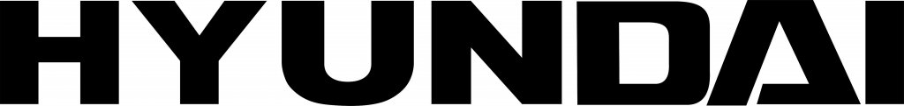
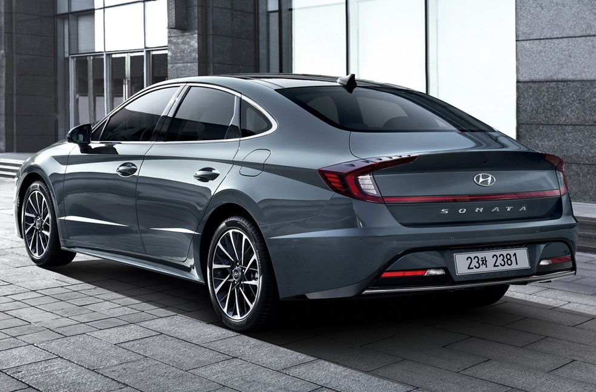
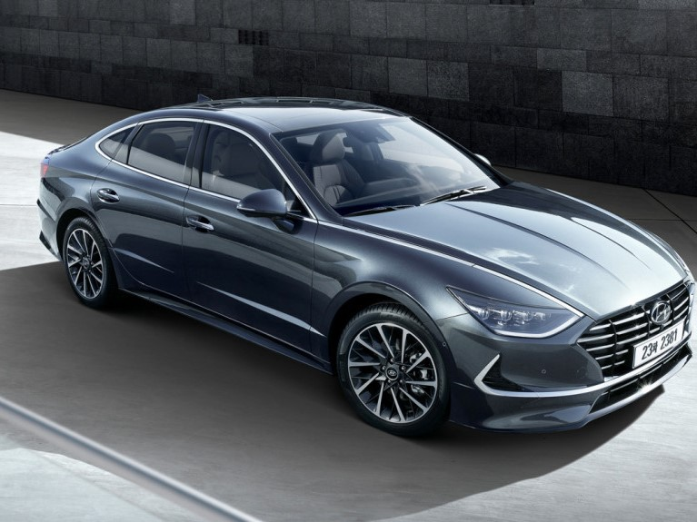
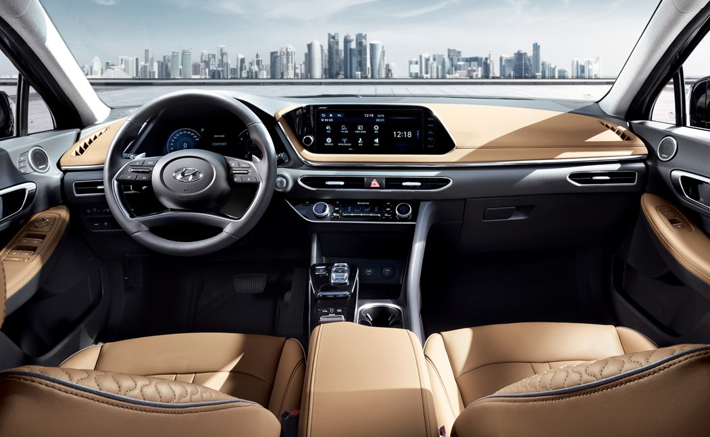

Компания основана в 1967 году Чон Чжу-ёном. Входит в (группу компаний) Hyundai
Motor Group. В 1960-х годах компания занималась выпуском нескольких легковых и
одной грузовой модели американского концерна Ford.
В 1972 году правительство Южной Кореи дало право производить автомобили четырём
компаниям, одной из которых и стал Hyundai. В 1974 году началось производство
малолитражной Hyundai Pony (англ.)русск., над внешним видом которой работали
мастера из итальянского ателье Italdesign Giugiaro. К 1980 году концерн должен
был производить до 50 000 автомобилей в год с локализацией производства компонентов
до 91 %, что и было выполнено. Первое поколение популярного и в наши дни седана
Sonata появилось осенью 1988 года, в 1996 в производство пошла спортивная модель
Coupe.
В 1998 году Hyundai поглотила корейскую автомобилестроительную компанию Kia Motors.
В 2000 году компания заключила стратегический альянс с DaimlerChrysler,
существовавший несколько лет. По данным на 2006 год состоящий из пяти
предприятий завод Hyundai в корейском городе Ульсан считался крупнейшим
автомобилестроительным заводом в мире.
Компании принадлежит ряд автозаводов в Южной Корее (в том числе крупнейший в мире
автосборочный завод в Ульсане), Турции, Северной Америке, Китае, Индии, Чехии,
России и Бразилии.
Автомобили компании продаются в 5000 автосалонов по всему миру. Официальный
слоган компании — «New thinking, new possibilities».
Между цехами заводов компании расположены просторные вольеры с различными животными,
в том числе оленями, павлинами, кроликами, лисицами и т. д. Целью этого является
повышение производительности труда специалистов, работающих на этих заводах.
Продажи компании в 2010 году составили 1,73 млн автомобилей. Выручка компании в 2010 году составила $32,29 млрд, чистая прибыль — $4,62 млрд.



